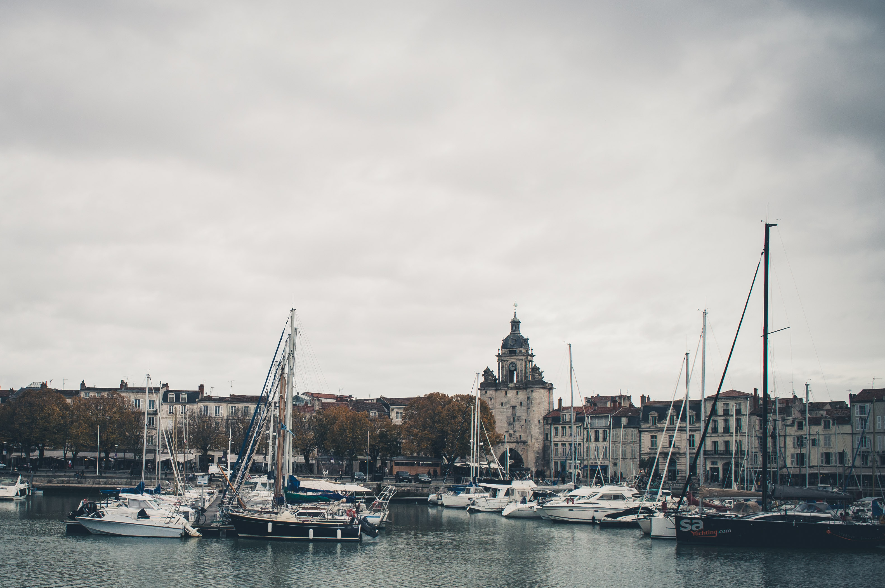

La Rochelle
Bienvenue dans la perle de l'Atlantique - La Rochelle !
Cuisine riche
Les restaurants locaux sont célèbres pour leurs plats à base de fruits de mer frais et d'ingrédients locaux.
Climat
Ici, le climat est tempéré avec des hivers doux et des étés frais.
Ville portuaire
Cette ville portuaire a une riche histoire avec de nombreuses attractions touristiques.
Plages
Sur son territoire, il y a de belles plages où vous pourrez profiter de l'eau de mer et du soleil.
Loisirs actifs
La ville est célèbre pour ses pistes cyclables qui permettent de parcourir facilement et confortablement son territoire.
Patrimoine historique
Ici, vous pouvez voir de nombreux bâtiments historiques, monuments et musées qui raconteront l'histoire riche de la ville.
Venez à La Rochelle - la perle de la côte atlantique !
La Rochelle est un ancien port avec un port pittoresque, qui est toujours entouré de fortifications médiévales et de tours impressionnantes. La Rochelle est une belle ville ancienne, imprégnée d'air marin salé. Il a un charmant centre historique, plein de vieux bâtiments.
La Rochelle a été fondée au 10ème siècle. Aux 12ème et 13ème siècles, la ville était une base des Templiers, qui y ont construit un grand port. Il existe encore dans la ville la rue des Templiers. Jusqu'au 15ème siècle, La Rochelle était le plus grand port du royaume de France. À l'époque de la Réforme, la ville a soutenu les huguenots. Une courte période de prospérité a duré la moitié d'un siècle. Ensuite, la flotte locale a été détruite par Charles Ier de Lorraine. En 1628, La Rochelle a été prise par les troupes royales et les huguenots ont dû la quitter. La Rochelle était un port important à l'époque des colonies. Pendant la Seconde Guerre mondiale, une base navale allemande y a été construite. D'ailleurs, La Rochelle a été la dernière ville de France à être libérée par les alliés.
La Rochelle a un climat marin modéré avec un été frais et un hiver doux. La ville est réputée pour sa gastronomie, notamment ses plats à base de poisson et de fruits de mer. Il y a aussi divers événements culturels et sportifs, tels que des festivals de jazz, des régates à voile et des marchés aux poissons.
Attractions de La Rochelle
La Rochelle offre de nombreuses attractions pour tous les goûts et tous les âges. Vous pouvez profiter des parcs d'attractions, des zoos, des musées, des monuments historiques, des festivals, des spectacles et bien plus encore. Que vous soyez à la recherche de sensations fortes, de culture, de nature ou de divertissement, vous trouverez votre bonheur à La Rochelle.
En savoir plusMets et Saveurs
Chaque plat est une œuvre d'art, créée à partir des meilleurs ingrédients en utilisant les technologies les plus innovantes. Bienvenue dans le monde étonnant de la vraie gastronomie ! Que vous soyez végétarien, carnivore ou intolérant au gluten, vous trouverez votre bonheur parmi notre carte. N'attendez plus et réservez votre table dès maintenant !
En savoir plusVieille Ville
La vieille ville de La Rochelle est l'une des principales attractions de la ville. Vous y trouverez de nombreuses rues étroites, de beaux bâtiments et des magasins. La vieille ville abrite également de nombreux restaurants et cafés où vous pourrez déguster la cuisine locale.
En savoir plusVieux Port
Le vieux port de La Rochelle est une autre des principales attractions de la ville. Vous y trouverez de nombreux restaurants et cafés, ainsi que des magasins et des attractions touristiques. Le vieux port est également le point de départ des excursions en bateau et en yacht.
En savoir plusPlage
La Rochelle dispose de plusieurs plages de sable fin, idéales pour se détendre au soleil ou se baigner dans l’océan Atlantique. Vous pourrez également pratiquer de nombreuses activités nautiques, comme le surf, la voile ou le kayak.
En savoir plusLa Rochelle Aquarium
L'aquarium de La Rochelle est l'une des attractions touristiques les plus populaires de la ville. Vous y trouverez plus de 12 000 animaux et plantes provenant de différentes parties du monde. L'aquarium propose également différents programmes et événements pour les visiteurs.
En savoir plusVoyagez avec nous à La Rochelle
La Rochelle est une perle de la côte atlantique française, pleine d’histoire, de culture et de beauté. Nous vous proposons des tours et des excursions variés dans cette ville étonnante et ses environs. Choisissez celui qui vous convient le mieux et profitez d’un séjour inoubliable.
-
Tour du vieux port
Découvrez le charme du vieux port de La Rochelle, ses tours médiévales, ses quartiers portuaires et ses marchés. Vous apprendrez l’histoire riche de la ville, son rôle dans les guerres de religion et le commerce avec le Nouveau Monde. Vous visiterez également le célèbre aquarium de La Rochelle, l’un des plus grands d’Europe.
Prix: 85 €
-
Tour des îles
Visitez trois îles pittoresques près de La Rochelle: Ré, Oléron et Aix. Vous profiterez des vues panoramiques sur la mer et la nature, vous découvrirez la cuisine et le vin locaux, et vous visiterez des sites intéressants, tels que la forteresse de Vauban sur l’île de Ré ou les marais salants sur l’île d’Oléron.
Prix: 128 €
-
Tour du patrimoine
Explorez le patrimoine architectural et culturel de La Rochelle, depuis ses origines romanes jusqu’à nos jours. Vous admirerez les façades à colombages du centre historique, les hôtels particuliers de la Renaissance, les églises gothiques et les musées d’art et d’histoire. Vous découvrirez également les traditions locales, comme la fabrication du cognac ou la pêche à la moule.
Prix: 95 €
-
Tour de la nature
Profitez de la nature préservée autour de La Rochelle, en parcourant les sentiers pédestres ou cyclistes qui longent la côte ou traversent les forêts. Vous observerez la faune et la flore locales, comme les oiseaux migrateurs, les orchidées sauvages ou les huîtres. Vous pourrez également vous baigner dans les plages de sable fin ou pratiquer des activités nautiques.
Prix: 75 €
Avis de nos clients
Camille Dubois
J'ai passé des vacances merveilleuses à La Rochelle ! La ville est magnifique et il y a tellement de choses à voir et à faire. J'ai adoré flâner dans les rues et sur le port, découvrir les commerces et les restaurants locaux. J'ai également apprécié la visite de l'aquarium de la ville, qui est l'un des plus grands d'Europe.
Lucas Martin
J'ai passé des vacances merveilleuses à La Rochelle ! La ville est magnifique et il y a tellement de choses à voir et à faire. J'ai adoré flâner dans les rues et sur le port, découvrir les commerces et les restaurants locaux. J'ai également apprécié la visite de l'aquarium de la ville, qui est l'un des plus grands d'Europe.
Sophie Lambert
Des vacances à La Rochelle étaient tout simplement inoubliables ! La ville est très confortable et belle, la mer est propre et chaude, et les gens sont sympathiques et serviables. J'ai particulièrement aimé le tramway de promenade et le restaurant de fruits de mer sur la promenade.
Contactez-nous
LRWeekendAdventures
- Adresse : Adresse : 123 Rue de la Paix, La Rochelle.
- Téléphone : 01 23 45 67 89
- Email : weekendalarochelle@gmail.com